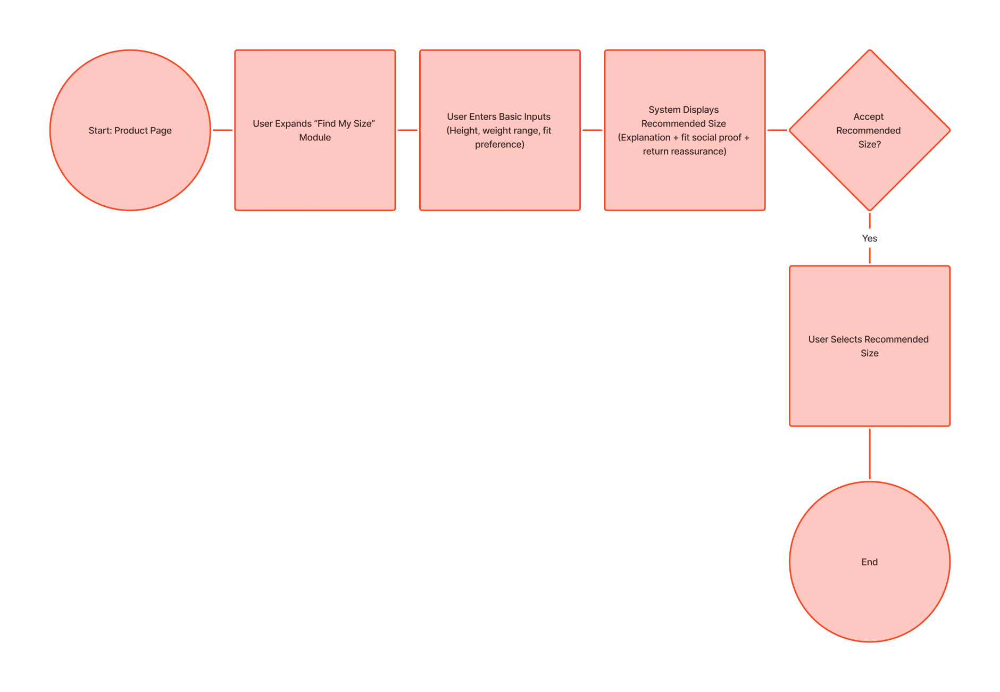
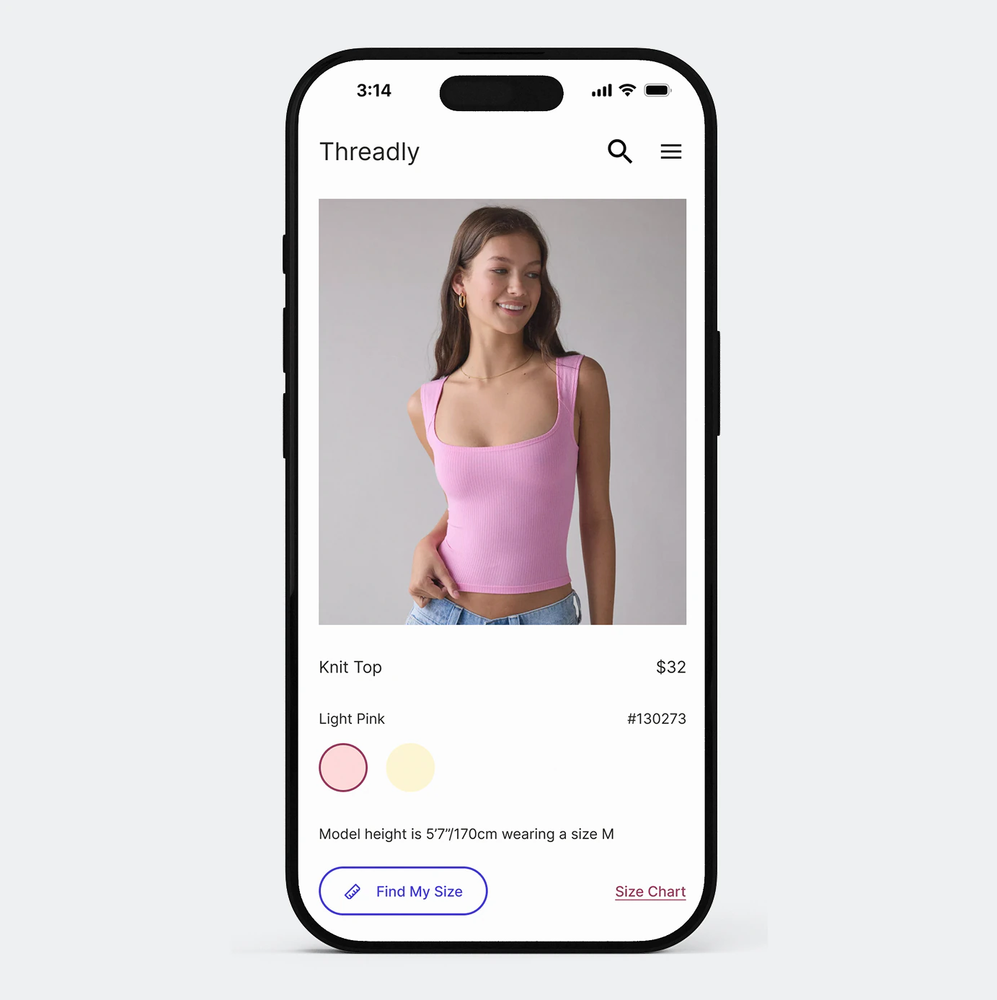
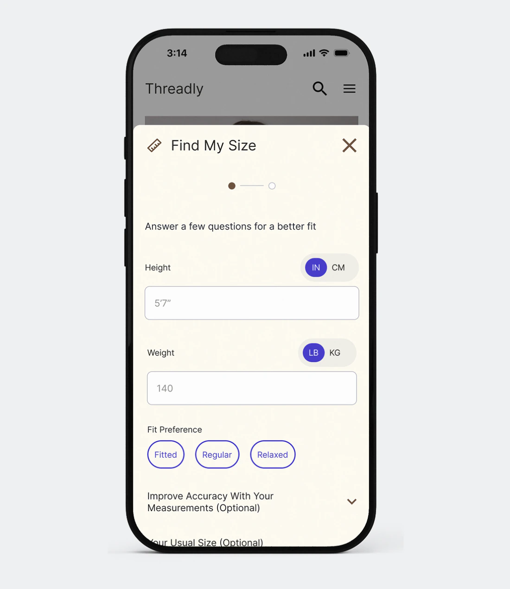
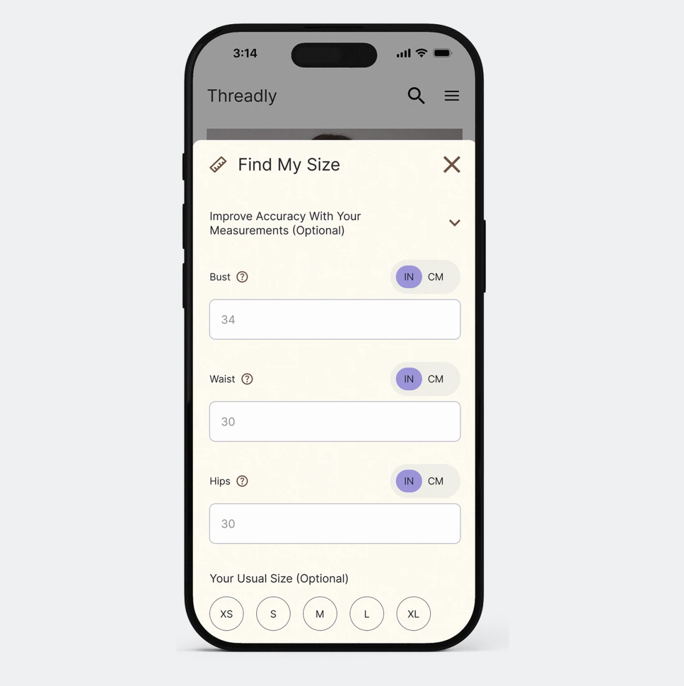
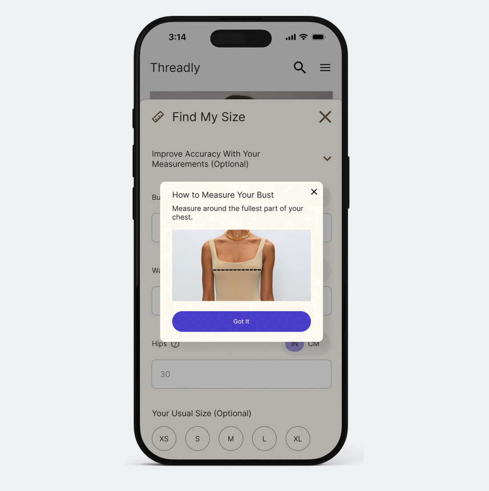
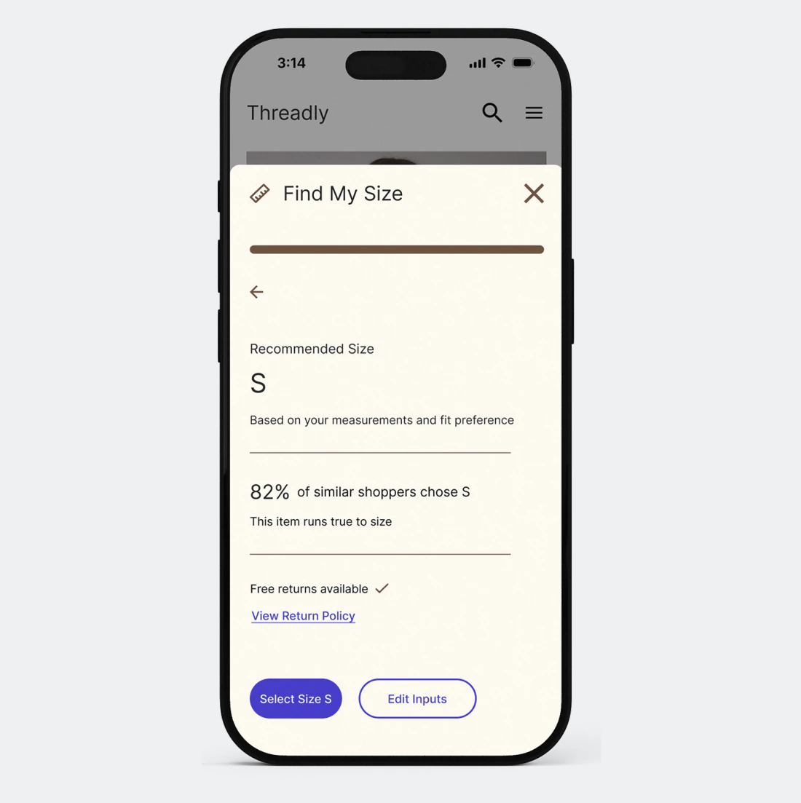

Embedded, not extracted.
The dip at Compare & Decide was the brief. Every design decision that followed was an answer to the same question: what does a shopper need at that exact moment to feel confident enough to commit?
Task Flow

Find My Size lives directly above the size selector on the product page: no app download, no account, no body scan. I considered a standalone app like Fytted, but separating the tool from checkout breaks the exact moment the journey map identified. Keeping it embedded wasn't just simpler, it was the right answer to the HMW.


Progressive disclosure on the form
Height, weight, and fit preference are asked upfront, which is the minimum for a useful recommendation. Body measurements live in a collapsible section and usual size is an added field, keeping the experience light while giving detail-oriented users a path to more accuracy.
Progress bar over step counter
An earlier iteration used a step counter. I replaced it with a progress bar: it communicates progress made rather than work remaining, which is the gentler frame for a form you want people to finish.

Visual hierarchy refinement
Toggle buttons for IN/CM, LB/KG, and fit preference were pulled to a lighter purple in the second iteration. Everything competed equally before so dialing them back made "Get Size Recommendation" the clear visual anchor.

Inline measurement guides
A heuristic evaluation of Aritzia revealed that users benefited from visual measurement guides inline. I adopted the same idea so users who didn't know their bust or waist measurement had a reference right there, without leaving the flow.

The recommendation screen shows its work
The result screen shows the suggested size, how it was determined, what percentage of similar shoppers chose it, whether the item runs true to size, and a free returns note with a link to the return policy. Most tools give you an answer. This one explains the reasoning behind it.